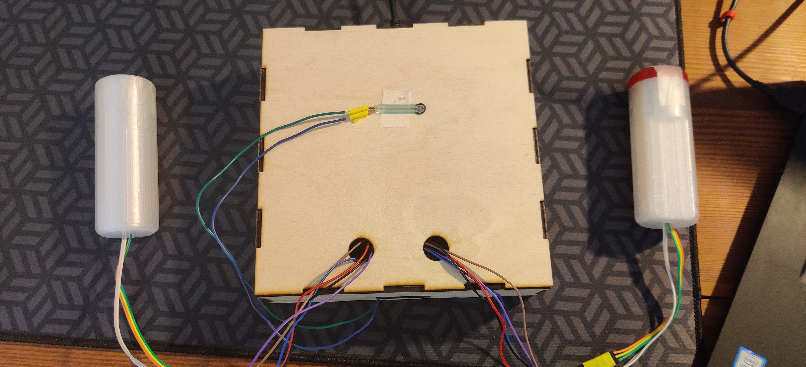
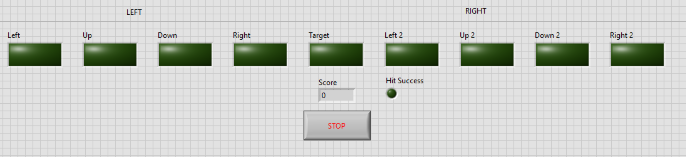
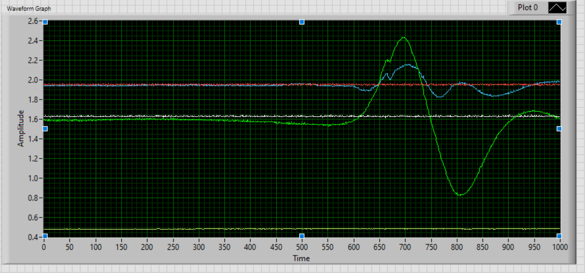
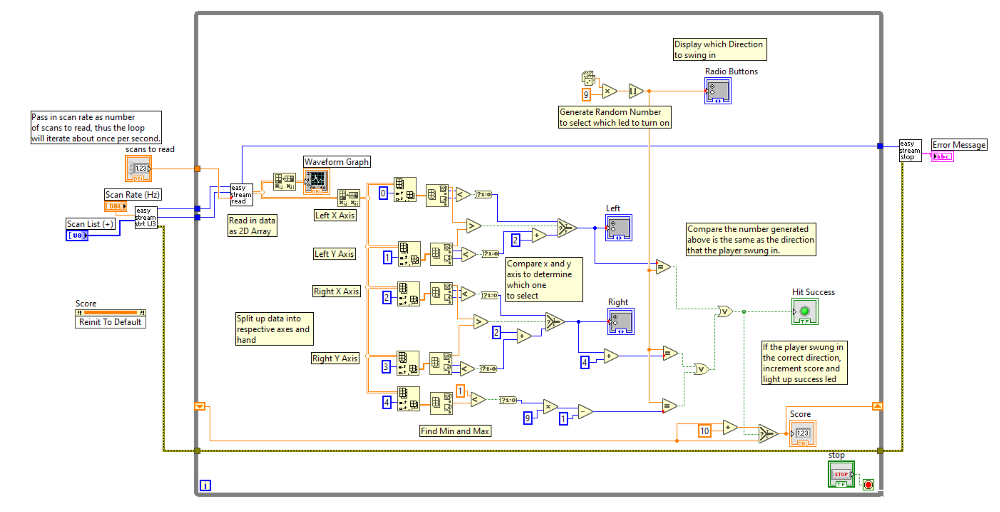
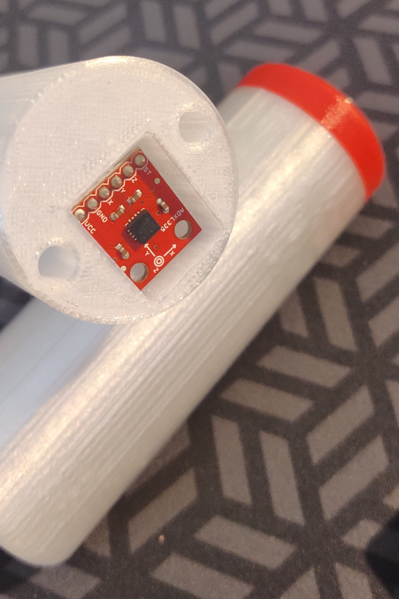
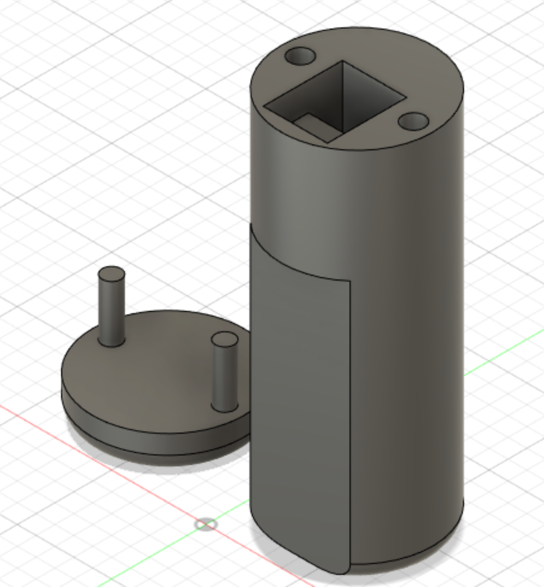
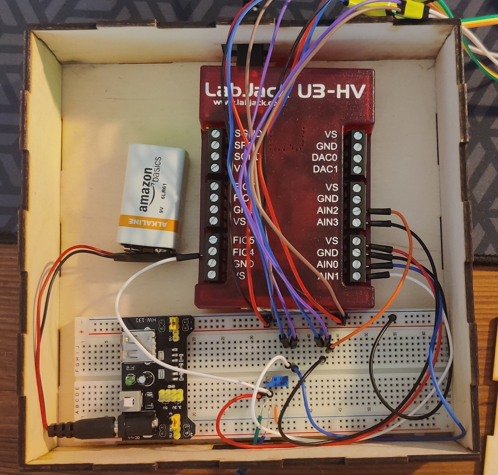

Beatsaber-like Rhythm Game
-

As a final project for APPL 240: Developing Your Sixth Sense: Designing Sensors and Electrical Circuits to Make Measurements I was told to use 3 different sensors to create something. It could be a game, a simulation, or an object but it had to incorporate sensors, use filters in a circuit, and create a program in Labview to read the output of the sensors. Given this freedom, I thought that it would be really fun to create a game similar to the well known virtual reality game called Beat Saber. For those of you that don't know, Beat Saber is a game where a player puts on a VR headset and uses a controller in each hand to swing at blocks flying towards them. The blocks must be swung at from a certain direction and are roughly correlated to the music that is playing. Although I couldn't create a whole VR headset and have the blocks flying towards a players face, I could have a player hold controllers and swing them in a specific direction when specific visual cues occur.
The first step in this project was to generate the visual cues that a player would react to. To do this, I created 9 LEDs where only 1 LED could light up at a time. There are 4 LEDs corresponding to left, right, up, and down for each hand as well as an additional LED for a tap motion where a player would tap a force sensitive resistor. The tap motion added a new mechanic that could challenge experienced rhythm game players.
-

The next challenge was to read the output from the accelerometers and the force sensitive resistor. The accelerometers that I used were 3 axis accelerometers. However, I only needed two axes for this project but that still meant between the two hands there were 4 axes or signal outputs that had to be read into the Labjack.
Setting up the circuit and utilizing filters to reduce any noise from the sensors wasn't difficult but figuring out how to turn the sensor output along the 4 axes into left, right, up, or down was tricky though. I needed to be able to check if the sensor output was the same as the direction indicated by the LED for the correct hand. To do this, I used arrays to read in the data and find the min and max values of the axis. By determining whether the min occured first or the max occured first, I calculated which direction along that axis the sensor moved and turned it into an integer output. That integer was then compared to the LEDs which each had an integer value associated with them to check if the player swung the controller in the right direction or not and with the correct controller as well. If the player did then they were awarded points.
Now that the software and hardware were all linked together, I just had to turn this into a functional game. I used a lasercutter to laser cut plywood to create a box that would store the Labjack, breadboard, and power supply. Then to house the accelerometers and create controllers that a player would use, I used Fusion 360 to design handles. As you can see below, the handles came in two parts, a body and a cap, and had a slot that the accelerometer would sit in. Down the center of the handle was a hole where the wiring for the accelerometers would come out and the signals would be sent to the circuit to be read.
-



Beatsaber-like Rhythm Game Features
Features include:
- Labview program and UI
- Labjack to read sensor outputs
- 3 axis accelerometer to measure hand movements
- Force sensitive resistor to read tap motion
- 3D printed handles to hold accelerometers and are the controllers for the player
- Custom circuit with filters to reduce noise
This project was so much fun and was the first project I created that incorporated both software and hardware. From learning how to use accelerometers to designing my own circuit and writing my own Labview program, it was a great learning experience. The thing that I struggled the most with was creating the Labview program because it was just the thing I had the least practice with. Coming from a Java and C++ background, it was really frustrating because I knew exactly how I would write the code if it was an one of the languages I knew but because it was a graphical interface I had to relearn how to think about loops and if statements and even simple things like addition and subtraction. Despite the many challenges and hurdles along the way it was beautiful to watch all the differnt tools and technologies come together to create something amazing.